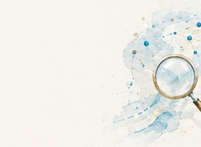
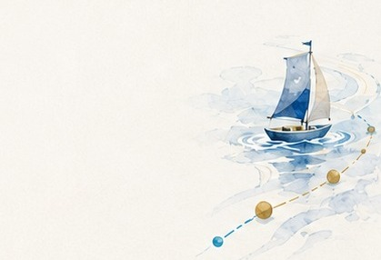
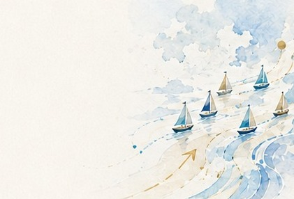
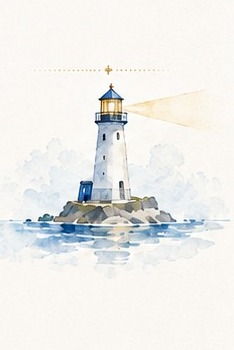
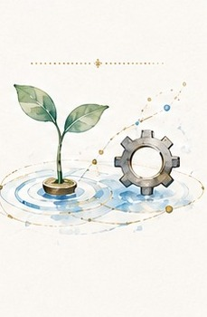
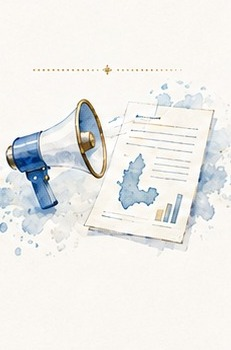
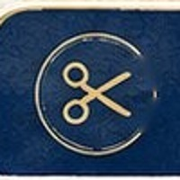

予約・問い合わせ対応
電話や紙、複数のサイトに予約・問い合わせ情報が散らばっていて、対応に追われてしまう。
日々の忙しさの中で後回しになりがちな困りごとを、まずは一緒に見える化するところから始めます。ひとつでも当てはまれば、本プロジェクトがお役に立てるかもしれません。
電話や紙、複数のサイトに予約・問い合わせ情報が散らばっていて、対応に追われてしまう。
顧客情報や台帳が紙やExcelのままで、担当者しか内容がわからず、引き継ぎが不安。
発注や仕入れの判断が「長年の勘と経験」に頼りきりで、数字として残っていない。
日報や記録づけが属人化していて、忙しいと後回しになり、正確な記録が残らない。
ベテランのやり方や判断が言葉にできず、若手やパート・アルバイトに伝えづらい。
AIやデジタル活用に興味はあるものの、何から手をつければよいのか分からない。
本プロジェクトは、個社への一方的な支援ではなく、同じ業種・同じ悩みを持つ事業者どうしが協働しながら、小さな一歩から取り組む実証プロジェクトです。

STEP 01日々の業務の中に埋もれている困りごとを、専門家や仲間と一緒に整理し、共通の課題として言語化します。

STEP 02いきなり大きな投資はせず、AIやデジタルツールを使って、まずは小さな範囲・短い期間で試してみます。

STEP 03取り組みの成果や工夫を、事例・テンプレートとして地域に共有し、次に挑戦する事業者の背中を押します。
個社支援ではなく、「協働型DX」であることが本プロジェクト最大の特徴です。
説明会・ワークショップ・実証を通じて、以下のようなメリットが得られます。
課題を見える化し、何から始めるかを整理できる。
同じ悩みを持つ事業者の工夫や進め方を学べる。

専門家と伴走しながら、小さな実証から始められる。

大きな投資の前に、低コストで可能性を確かめられる。

成果や工夫が地域に共有され、次の挑戦につながる。
同じ業種・同じ悩みを持つ事業者どうしでチームを組み、テーマごとに共通する課題の解決に取り組みます。

施術履歴や薬剤配合、顧客情報が紙のカルテと担当者の記憶に依存し、再来店の状況も見えづらい。
▶ 顧客カルテのデジタル化を通じて、業務の効率化と再来店率の見える化に取り組みます。
予約や注文情報が電話・紙・複数サイトに分散し、仕入れや仕込みの量は経験と勘に頼りがち。
▶ POSレジ等で売上・注文データを見える化し、発注や在庫管理の改善に取り組みます。
見積・請求・議事録作成などの定型業務が特定の担当者の手作業に依存し、AI活用も個人任せ。
▶ AIエージェントの構築・活用を通じて、定型業務の効率化と組織的な定着に取り組みます。
※ 上記は現時点で想定している取組内容です。実際の課題・進め方は、参加事業者どうしのワークショップを経て決定します。対象業種が迷う場合は、お気軽にお問い合わせください。
「学ぶ」→「見える化する」→「小さく試す」の順に、段階を踏んで進めます。途中でつまずいても、専門家や仲間がサポートします。
参加事業者を中心に、同じ悩みを持つ仲間・支援機関・専門家・広島県が周りを支える体制です。
募集から成果発信まで、以下のような流れで進める予定です。
支援機関・本LP・SNS等を通じて参加事業者を募集
事業の内容や進め方をご説明し、疑問や不安にお答えします
同じテーマの事業者どうしで、共通する困りごとを整理
AI・デジタルツールを使って、低コスト・短期間で試行
選抜事業者で本格的に運用し、効果を数値で確認
取組の成果を事例として地域に発信
※ 上記は現時点（2026年8月）の想定スケジュールです。契約内容の確定にあわせて前後する可能性があります。詳細は説明会にてご案内します。
「難しそう」「うちには関係ない」と思う前に、まずはお気軽にご相談ください。
※ 説明会の日程・お申し込みフォーム・お問い合わせ先は現在調整中です。確定次第、本ページに掲載します。